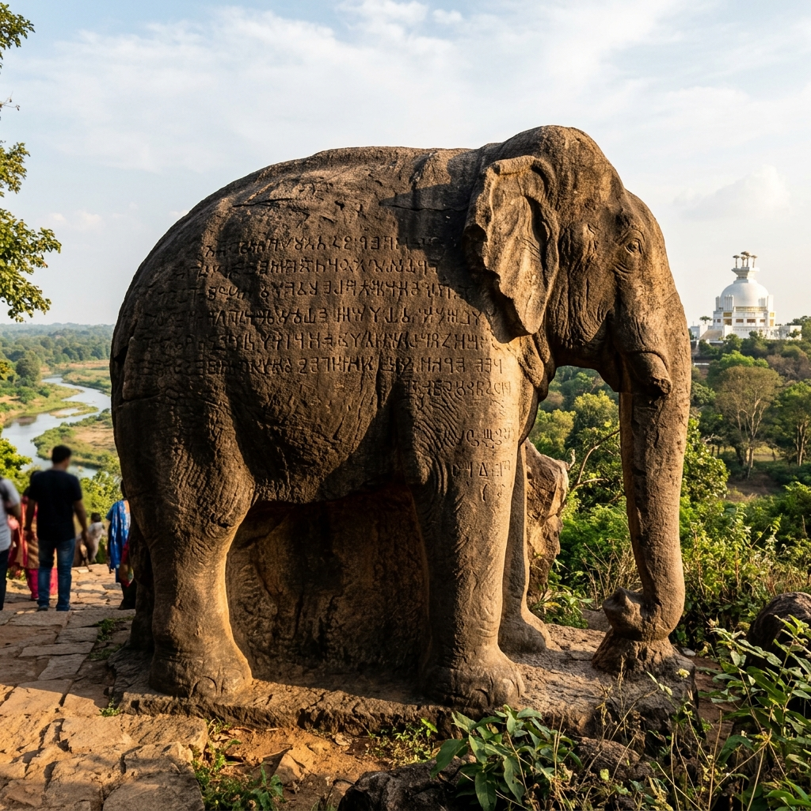
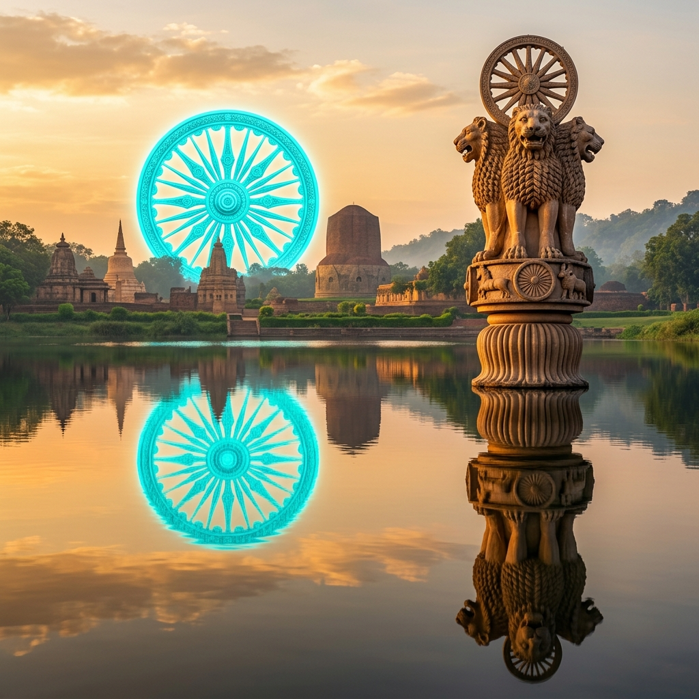

Battle of Kalinga Explorer
Witness the bloodiest battlefield of ancient India along the Daya River. Discover the clash that expanded the Maurya Empire and transformed Emperor Ashoka from a ruthless conqueror into a legendary apostle of Buddhist peace.
The Geopolitics of the Ancient East Coast
By 261 BCE, the Mauryan Empire under Emperor Ashoka ruled almost the entire Indian subcontinent, inherited from his grandfather Chandragupta Maurya. However, the prosperous, independent maritime republic of Kalinga (modern Odisha) stood as a defiant pocket of sovereign territory on the eastern coast.
Kalinga controlled the lucrative trade routes leading to Southeast Asia and Sri Lanka, both by land and sea. In 262 BCE, Ashoka demanded Kalinga's submission. The proud republic refused, setting the stage for a massive military campaign as Ashoka mobilized the full weight of the imperial Mauryan legions.
🏛️ At a Glance
- Combatants: Maurya Empire vs. Republic of Kalinga.
- Location: Dhauli Plains along the Daya River, Odisha.
- Scale: Over 600,000 soldiers engaged in total.
- Outcome: Mauryan victory; Kalinga annexed.
Leaders of the Great Battle
The opposing forces represented two very different models of ancient Indian statehood.
Emperor Ashoka
The sovereign ruler of the Maurya dynasty, leading a colossal imperial army of approximately 400,000 infantry, horsemen, and armored war elephants.
Kalinga Council & Generals
Kalinga was governed by a democratic republican council. Their generals mobilized a defensive army of nearly 200,000 citizens to protect their liberty.
The Elephant Legions
Both sides deployed formidable divisions of battle elephants, which crushed enemy ranks and broke infantry shield walls on the plain.
📊 War Casualties
- Slain in Battle: Over 100,000 Kalinga defenders.
- Mauryan Dead: Tens of thousands of imperial troops.
- Deported & Displaced: Over 150,000 citizens exiled or enslaved.
- Daya River: Legend states the river ran red with the blood of the fallen.
A Pyrrhic Victory of Blood and Ash
The battle on the plains of Dhauli was intensely brutal. The Kalinga forces fought to the last man, refusing to retreat. The Mauryan army's overwhelming numbers and superior cavalry tactics eventually broke the Kalinga lines, culminating in a total Mauryan victory.
However, the cost was unprecedented. When Emperor Ashoka rode out to inspect his newly conquered province, he witnessed a wasteland of burning villages, rotting corpses, and weeping orphans. The scale of human suffering shook the emperor to his core, triggering a profound spiritual crisis.
Chronology of the Kalinga Campaign
Follow the campaign timeline that changed Ashoka's destiny and the religious map of Asia.
Coronation of Ashoka
Ashoka ascends the Mauryan throne, pursuing aggressive expansion campaigns across central India.
Sovereign Refusal
Kalinga rejects the Mauryan vassalage offer, fortifying its borders and mobilizing its defensive armies.
The Battle of Kalinga
Fought on the banks of the Daya River near Dhauli hills, ending in massive bloodshed and Mauryan conquest.
The Great Remorse
Ashoka renounces war and embraces Buddhism under the monk Upagupta, adopting the policy of Dhamma.
Rock Edict XIII Promulgation
Ashoka inscribes his sorrow and conversion onto rock faces across his empire, including the edict at Dhauli.
The Legacy: From Swords to Dhamma Wheels
How a military slaughter sparked the global spread of Buddhism and moral governance.
Expansion of Buddhism
Ashoka sent Buddhist missionaries to Sri Lanka, Greece, Egypt, and Central Asia, transforming a local sect into a major world religion.
Edicts & Pillars
Dozens of pillars and rock edicts were erected, proclaiming messages of religious tolerance, animal welfare, and moral duty (Dhamma).
Apostle of Peace
Ashoka's transition from "Chandashoka" (Ashoka the Fierce) to "Dhammashoka" (Ashoka the Righteous) remains one of history's greatest transformations.
Edicts and Relics of the Maurya Era
Explore the stone carvings and sacred memorials that commemorate the battle.


📚 References & Further Reading
- Emperor Ashoka (260 BCE). Major Rock Edict XIII. Dhauli Inscriptions.
- Thapar, Romila (1961). Asoka and the Decline of the Mauryas. Oxford University Press.
- Basham, A. L. (1954). The Wonder That Was India. Sidgwick & Jackson.
- Archaeological Survey of India (N.D.). Excavations at Dhauli Hills and Sisupalgarh.